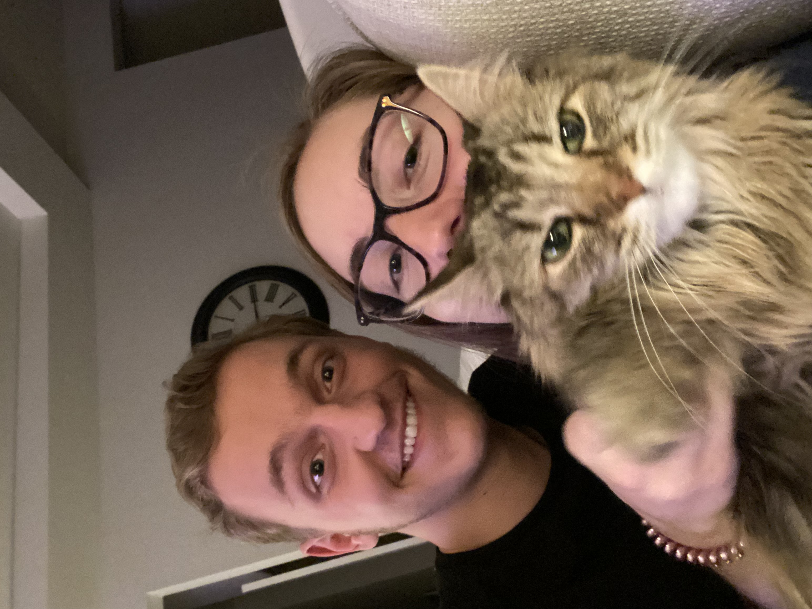

Calan Whiting
My degree is CIT. I currently have a job lined out for me with a company called NUVEK.
I love camping, dirt biking, music, and video games.
I am not yet married, but that will change in less than a year when I ask the love of my life to marry me.
There are many advantages to web design as many companies are in demand of good web designers to help with the creation/upholding of their websites. Im taking this course to fulfill the requirements of my major.
I have been a member of the Church of Jesus Christ of Latter-day Saints my entire life. I dont know if I have a favorite quote at this moment but my favorite talk is by Bruce R. McConkie titled The Purifying Power of Gethsemane. My favorite scripture is Moroni 7:29, look it up and you wont be disapointed.